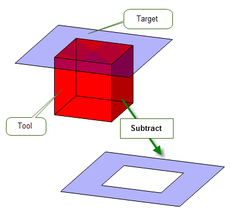
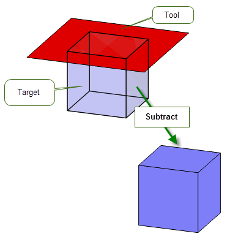
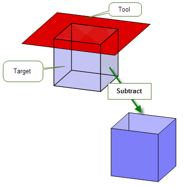
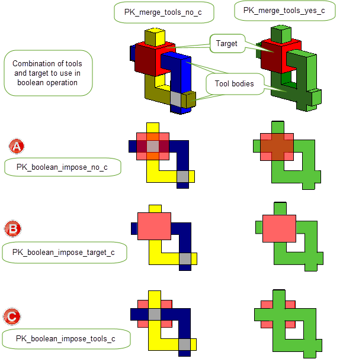
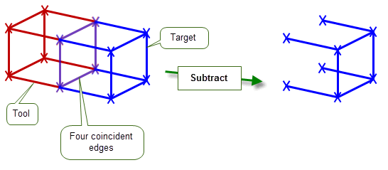

| |
General Booleans |
| <<< Manifold Booleans | Chapters | Instancing And Patterning >>> |
Chapter 53, “Manifold Booleans”, described the range of boolean operations that you can perform on manifold bodies using functions such as PK_BODY_boolean_2. You can also use PK_BODY_boolean_2 to perform boolean operations on general bodies, or to perform boolean operations on manifold bodies that may result in general bodies. This chapter describes the results you can expect from such operations, and the options you can use to control the results. For convenience, boolean operations on general bodies, or boolean operations that result in general bodies are both referred to as general booleans.
Before attempting general booleans in a Parasolid session, you need to enable generalised topology. To do this, use PK_SESSION_set_general_topology.
When generalised topology is enabled, any combination of bodies can be used as tools or target, with one exception: acorn vertices cannot be used in boolean operations.
The result of a general boolean is usually a single general body which may be disconnected, non-manifold, of mixed dimensions, or any combination of these. The result may also be a manifold body, if the
resulting_body_type
option has been set to a suitable value. See Section 54.4, “Simplifying the result”.
|
Note: Only global boolean operations may be attempted with generalised topology enabled. PK_FACE_boolean_2 can only be used on manifold bodies. |
For examples of this functionality, see the code example in the
C++\Code Examples\Modelling\Booleans\General Booleans
folder,
The following table summarises the effect of different boolean operations on general bodies:
|
The result of uniting a target body with one or more tools when generalised topology is enabled is that the target body contains all entities from the target and tool bodies. Depending on the settings of the various merge options (see Section 54.3, “Merging redundant topology”), some redundant topologies may be removed from the result. |
|
|
The result of subtracting one or more tool bodies from a target is that any part of the union of the tool bodies that overlaps the target is removed. This can produce different results, depending on the configuration of the tools and target. Some examples are shown in Section 54.2, “Examples of general booleans”. Subtracting a body from itself results in an empty body. The various merge options can also affect the topologies that remain in the result (see Section 54.3, “Merging redundant topology”). |
|
|
The result of intersecting one or more tool bodies with a target is that the target body is reduced to those entities that overlap with the union of the tools. Again, the various merge options can affect the topologies that remain in the result (see Section 54.3, “Merging redundant topology”). |
Irregular boolean operations (such as boolean operations between two bodies, each containing a single open shell) are supported when generalised topology is enabled.
As well as enabling generalised topology, you are strongly recommended to leave the
update
option in PK_BODY_boolean_2 at its default setting when performing general booleans. In particular, if update is set to PK_boolean_update_0_c, then performing general booleans may lead to unexpected results.
The
update
option is described in more detail in Section 53.4, “Specialised boolean operations”.
Figure 54-1 shows the result of subtracting a solid tool from a sheet target that is coplanar with one face of the tool: material is removed from the target where it clashes with the tool.
Figure 54-1 Subtracting a solid tool from a sheet target
By contrast, Figure 54-2 shows the effect of subtracting a sheet tool from a solid target, using the same bodies. Here, the result is unchanged, since removing a face from a solid is considered to have no effect.
Figure 54-2 Subtracting a sheet tool from a solid target
|
Note: If the tool intersects the solid, rather than is coincident with it, then the result depends on how you have chosen to merge redundant topology: see Section 54.3, “Merging redundant topology”, for details. |
Finally, Figure 54-3 shows the result of subtracting a sheet tool from a sheet target, where the tool is coplanar with one of the faces of the target. Here, the face is deleted from the target, in this case leaving an open sheet body.
Figure 54-3 Subtracting a sheet tool from a sheet target
As with manifold booleans, performing a general boolean can often leave topology in the result body that you consider redundant, because it no longer serves any useful purpose. A face may be completely enclosed by a solid, or an edge may be surrounded by a face, for example. You may decide that keeping this redundant topology in the result body is useful, or you may want to get rid of it completely. PK_BODY_boolean_2 provides the following options to let you control this behaviour.
Note: The options described in this section should only be used for general boolean operations. To merge redundant topology in manifold bodies, use the
selective_merge
and
merge_imprinted
options, as described in Section 52.4.13, “Imprint completion”. |
merge_in_edge |
Whether to merge out any redundant vertices on edges in the result body which were created or altered as part of the boolean operation. Default: PK_LOGICAL_false |
merge_in_face |
Whether to merge out any redundant topologies in faces of the result body which were created or altered as part of the boolean operation. Default: PK_LOGICAL_false |
merge_in_solid |
Whether to merge out any topologies which become surrounded by solid in the result body. Default: PK_LOGICAL_false |
merge_in_face_dimension |
When merging topologies inside faces ( |
merge_in_solid_dimension |
When merging topologies surrounded by solid (
|
impose_bodies |
Whether the target body should impose on the tool bodies or vice versa. Default: PK_boolean_impose_no_c. See Section 54.3.1, “Finer control over region survival and inheritance” for more information. |
merge_tools |
Whether to merge overlapping tools in a multi-tool boolean. Default: PK_merge_tools_no_c. See Section 54.3.1, “Finer control over region survival and inheritance” for more information. |
The default values of
merge_in_face_dimension
and
merge_in_solid_dimension
are set such that all newly redundant topologies are merged out of faces and solids just by setting
merge_in_face
or
merge_in_solid
respectively to PK_LOGICAL_true.
Figure 54-4 demonstrates how you can control merging of topologies in a solid body. In the example, a solid target is united with a sheet tool. When
merge_in_solid
is PK_LOGICAL_true then the part of the tool that lies internal to the target is removed from the result. When
merge_in_solid
is PK_LOGICAL_false (the default), the internal face remains. In this example, the value of
merge_in_face
has no effect, since no faces contain topologies that may be merged.
Figure 54-4 Merging topologies during unite operations
Figure 54-5 shows a case that uses the same solid and tool in a subtract operation. Here, the value of
merge_in_face
is significant as well. The effects of different values of
merge_in_solid
and
merge_in_face
are as follows:
Figure 54-5 Merging topologies during subtract operations
Whereas the
merge_in_solid
option allows you to fully merge each set of adjacent solid regions in the result (producing from each a region that inherits from all the originating overlapping regions) the
impose_bodies
and
merge_tools
options provide finer controls to choose which regions survive and from what parent regions they inherit.
The
impose_bodies
option controls interactions between the target and tool bodies and takes the following values:
|
Neither the target nor the tool bodies impose on each other therefore all result regions survive and inherit from both target and tool parent regions as illustrated in Figure 54-7 (a). This is the default. |
|
|
The solid regions of the target body are imposed onto the tool bodies. The resultant regions inherit only from their parent regions in the target. Any topologies of the tool bodies that lie within the solid regions of the target are considered redundant and deleted as illustrated in Figure 54-7 (b).. |
|
|
The solid regions of the tool bodies are imposed onto the target body. The resultant regions inherit only from their parent regions in the tool(s). Any topologies of the target that lie within the solid regions of the tool bodies are considered redundant and deleted as illustrated in Figure 54-7 (c). |
Further control over the behaviour of overlapping tool regions in multi-tool booleans is provided by the
merge_tools
option. It takes the following values:
|
Tool bodies are not merged and therefore topologies are not deleted as illustrated in Figure 54-6. This is the default. |
|
|
All connected tool regions are merged and any topologies that lie within the solid material of any other tool body are considered redundant and deleted as illustrated in Figure 54-6. |
Figure 54-6 Effects of setting the
merge_tools
option
When used together, these options allow you to control what material is retained in the result regions after the boolean operation as illustrated in Figure 54-7.

Figure 54-7 Effects of setting different values of
impose_regions
and
merge_tools
options
|
Note: When using these options the following must apply: |
The
resulting_body_type
option can be used to produce a result body that has the simplest form possible. This can be useful when performing general booleans, because it gives you a straightforward way to convert a general body into a manifold body based on the topology that the body already has.
Figure 54-8 shows an example in which two tools - a solid cube and a (non-manifold) wire cube - are intersected with a solid cube target so as to produce a wire result. If
resulting_body_type
is set to PK_boolean_prefer_simplest_c, then the type of the result body (as returned by PK_BODY_ask_type) is PK_BODY_type_wire_c. However, if
resulting_body_type
is left at the default setting of PK_boolean_prefer_original_c, then the type of the result body would be PK_BODY_type_general_c.
|
Note: In
Figure 54-8, remember that the intersection between a target and several tools is the same as the intersection between the target and the union of all the tools. It is
not the mutual intersection of all the individual bodies. |
Figure 54-8 Simplifying the result of a general boolean
When performing general booleans, PK_BODY_boolean_2 returns a single body which may be disjoint regardless of the
allow_disjoint
option.
See Section 14.2.1, “Body”, for more information about different types of body.
See Section 52.4.17, “Specifying the body type of the result”, for more information about the
resulting_body_type
option.
This section provides a summary of the limitations that apply when performing boolean operations on wire bodies.
You can unite, subtract, and intersect manifold or general wire bodies.
In order to perform boolean operations on wire bodies, general topology must be switched on using PK_SESSION_set_general_topology (even when the wire bodies are themselves manifold). In most cases, the resulting body will be a general body, except when all input bodies are manifold. In this case, the result may be another manifold body if the configuration of the bodies is suitable.
In addition to the options listed in Section 54.6, “Unsupported options”, you should leave
default_tol
at its default value when performing booleans between wire bodies, since it is not valid to set a tolerance on an edge in a wire body. Instead, if you want to represent tolerance information, set a tolerance on the vertices, using PK_VERTEX_set_precision.
When subtracting wire bodies, remember that boolean operations subtract all coincident elements. This may lead to unexpected results, particularly if you are more used to performing booleans on solid bodies. Figure 54-9, for example, shows the result when you perform a subtract operation on wire bodies that have coincident edges. In this example, because the target has several edges that are coincident with the tool, those edges are also removed in the result body.
Figure 54-9 Subtracting wire bodies with coincident edges
A number of options in PK_BODY_boolean_2 are unsupported when performing general booleans, and must be left at their default settings. The table below gives details of the affected options.
fence |
Use of the |
target_material_side tool_material_side |
The use of material side options to trim bodies is not supported with general booleans. |
flag_no_effect |
You cannot request that Parasolid tells you if the target body is unaffected by the tools during general booleans. |
target_face_overflow tool_face_overflow interior_overflow |
You cannot control Parasolid’s behaviour if imprinted edges overflow from the target to the tool, or from the tool to the target, with general booleans. |
nm_edge_repair blend_radius |
You cannot request that Parasolid repairs non-manifold results by replacing edges with blend edges, during general booleans. |
merge_imprinted selective_merge |
To control merging of redundant topology in general booleans, use the options described in Section 54.3, “Merging redundant topology”. |
imprint_overlapping |
In cases where faces in the target and tool share the same surface, you cannot request that Parasolid preserves overlapping boundaries during general booleans. |
configuration |
During general booleans that use several tools, you cannot optimise performance in cases where either none of the tools intersect with each other, or when none of the tools intersect with the existing boundary edges of the target. |
See Chapter 53, “Manifold Booleans”, for more information about all of these options.
| <<< Manifold Booleans | Chapters | Instancing And Patterning >>> |